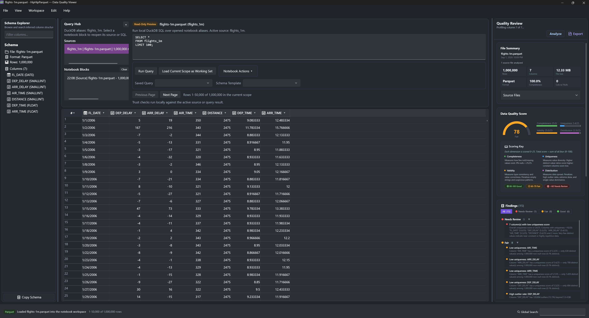
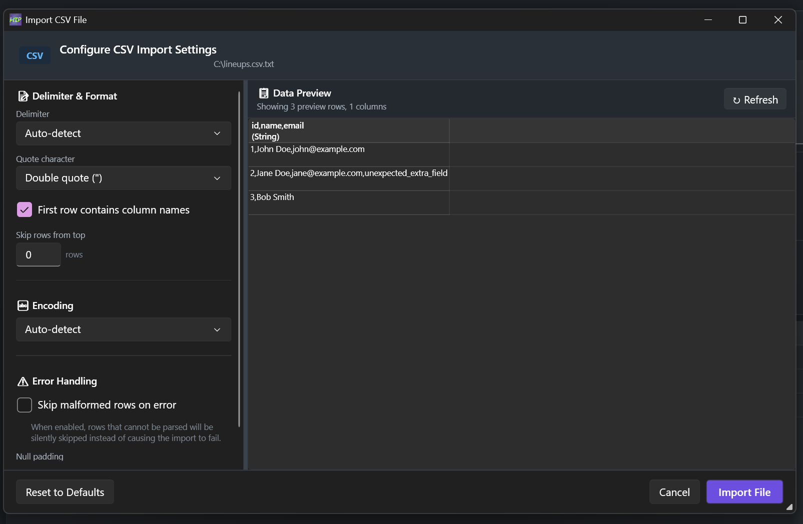
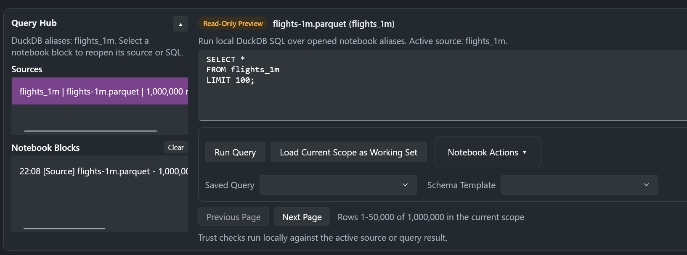
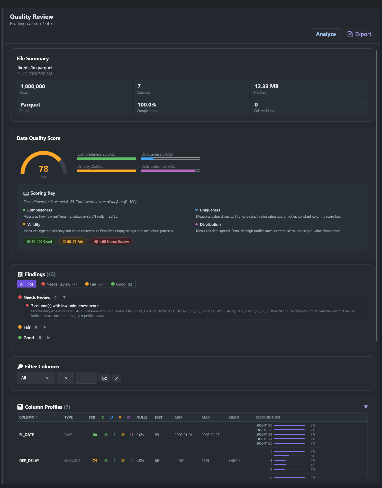
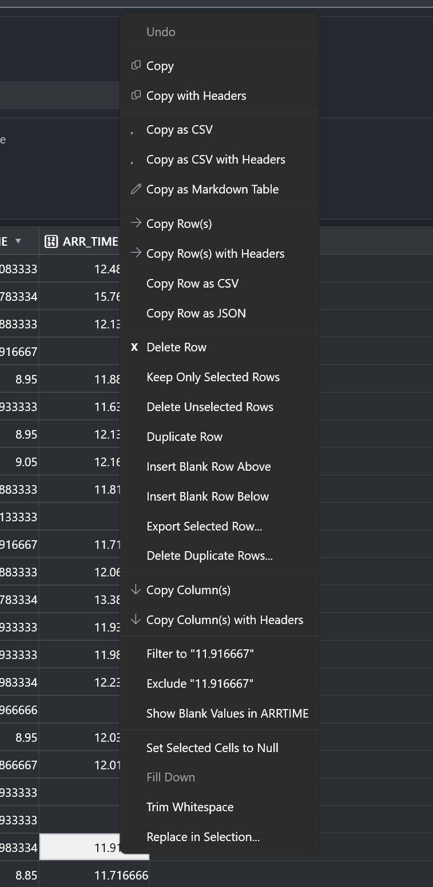

Hip Hip Parquet opens Parquet, CSV, JSON and Excel files, runs real SQL across them with DuckDB, scores their quality across four dimensions, and lets you correct problems in the grid and save back — all on your own machine, with no account and no service behind it.
Installer or portable zip · 64-bit · SHA-256 checksums published with every release

flights-1m.parquet · 1,000,000 rows · 7 columns · 12.33 MB · scored 78/100 with 15 findings · nothing uploaded
Except Parquet needs a Power Query detour before it will open at all, your IDs and dates get silently reformatted on the way in, and the whole thing gives up at 1,048,576 rows.
Cost: wrong answers you won't notice
Fast, right up until you remember the file has customer records in it and you just handed it to a server you've never heard of.
Cost: a conversation with your security team
Spin up a kernel, import pandas, guess at the encoding, print the head, discover the schema drifted, start again.
Cost: twenty minutes, every single time
Hip Hip Parquet is the fourth option: double-click the file and get on with your day.
No pipeline to configure, no service to stand up, no notebook to babysit. Open, question, judge, repair.
Drag it onto the window, pick it from recent files, or pass it as a command-line argument. Sharded and multi-part Parquet gets stitched into one logical table automatically. CSV and JSON get an import dialog first, so you set the delimiter and encoding before anything is guessed wrong.
50,000 rowsper page, so a million-row file opens now instead of after a coffee.snappy.parquetrecognised, along with split and sharded Parquet directoriesencodingdetected on CSV import, with an options dialog to override itworkspacerestored on startup — the file, the panes, the sizes, where you left off
The Query Hub sits above the grid and runs DuckDB against your opened files. Register them as named aliases and join across them. Results open as a read-only preview; Load Current Scope as Working Set promotes them to the thing you're editing. Queries you run often get saved by name, and every step lands as a notebook block you can reopen or clear.
DuckDBstandard SQL over local files — no import step, no database to runaliasesregister several files at once and query across them togetherone clickchecks for nulls and empties, duplicates, and regex pattern matchestemplatessave a schema from a known-good file and validate incoming files against it
Completeness, uniqueness, validity and distribution are each scored 0–25 and summed into a single number out of 100, banded Good, Fair, or Needs Review. Every finding is triaged the same way, so you read the one that says DEP_DELAY has 120,804 outliers, 12.1%, beyond 1.5×IQR before the six that say everything is fine.
0–100four dimensions at 0–25 each — you can see exactly which one cost you the pointstriagedfindings split into Needs Review, Fair and Good instead of one flat listper columnnull rate, distinct count and ratio, outlier rate, value distributionHTML reportexported as a single self-contained file you can send to someone
Most tools show you the problem and leave you to go solve it elsewhere. Here you edit cells inline, fill down, trim whitespace, set to null, find and replace inside a selection, deduplicate, delete or keep only the rows you selected. A pending-changes badge tracks unsaved edits; Ctrl+Z undoes the last one. Save back to the original file, or export to a different format entirely.
in placedouble-click a cell and type — an opened file is editable, not a read-only viewrow opsdelete, duplicate, insert blank, keep only selected, deduplicate8 copy formatsCSV, TSV, Markdown table, row-scoped JSON, with or without headersconvertopen a CSV, save a Parquet — Save As and Export As cross formats
Because "supports Excel" is the kind of claim you find out is only half true at the worst possible moment.
| Format | Read | Write |
|---|---|---|
| .parquet · .pqt | ✓ Yes | ✓ Yes |
| Snappy-compressed Parquet | ✓ Yes | ✓ Yes |
| Split / sharded Parquet | ✓ Yes | ✓ Yes |
| .csv · .tsv · .tab | ✓ Yes | ✓ Yes |
| .json · .jsonl · .ndjson | ✓ Yes | ✓ Yes |
| .xlsx | ✓ Yes | ✓ Yes |
| .xls | ✓ Yes | — Read only |
Every column and inferred type in a side pane. Search by name or type, click to jump the grid there, copy the whole schema out.
Save a filter, search, sort and column-visibility combination under a name and reapply the whole configuration in one click.
Pane sizes, visibility, the active file — captured and restorable, so Monday morning looks like Friday afternoon.
Narrow to values, exclude values, or isolate blanks. Filter state survives a reload, and clears from the status bar.
An editor with live preview, embedded beside the grid or popped out to its own window. Your notes stay next to the data.
Light, dark, and system-tracked. It looks like a Windows app because it is one — WPF, not a browser in a costume.
Recent files on the taskbar, plus taskbar progress while a long load or analysis runs.
Rows, columns, file size, format, completeness and columns-with-nulls, on one card before you read a single value.
Plenty of tools say your data is safe with them. This one has nowhere to send it — there is no backend, no account system, and nothing in the app that opens a socket to a service. If that matters for the files you work with, you can verify all of it yourself.
A self-contained desktop application with no external service dependency. Parsing, querying, profiling and export all happen in the process running on your machine.
Nothing to sign up for, no licence key, no seat count. Download it and open a file.
MIT licensed on GitHub. If "trust us" isn't good enough — and for regulated data it shouldn't be — read the code or hand it to whoever needs to sign off.
Each release ships a SHA256SUMS.txt alongside the installer and the portable zip, so you can verify what you downloaded.
No installer, no registry, no admin rights. Extract the zip to a folder and run the executable.
Download and run it. There is no second step.
HipHipParquet-1.13.2-Setup.exe
Download installerExtract anywhere and run HipHipParquet.exe. Nothing is written to the registry, no admin rights needed.
HipHipParquet-1.13.2-Portable.zip
Download portable zipNo. There is no backend service, no account system, and no upload step anywhere in the workflow. Files are read from disk, processed in the local application, and written back to disk. The source is MIT licensed if you want to confirm that yourself.
Not today. It's a WPF application, which is Windows-only. If a cross-platform build matters to you, say so in the issue tracker — that's the signal that decides what gets built next.
Data loads in batches of 50,000 rows, with more loaded on demand or all at once, so the window stays responsive on files far larger than memory-at-once tools can manage. Querying goes through DuckDB, which is built for exactly this.
The .NET 8 Desktop Runtime, if it isn't already on the machine. The installer page links to it directly.
It's free and MIT licensed, with no paid tier and no plans to add one. If it saves you time, sponsoring the project on GitHub is the way to keep it moving — but nothing is gated behind that.
That's the case it was built for. Everything stays on the machine, the portable build needs no admin rights or registry access, releases ship with SHA-256 checksums, and the full source is available for review by whoever has to approve new software where you work.
Neither. It's for the step before and after those: understanding a file you've been handed, checking a file you're about to load, and fixing the small problems that don't justify a pipeline change.
Starring the repo is the cheapest way to help someone else with the same problem find it — and issues and feature requests genuinely shape what ships next.